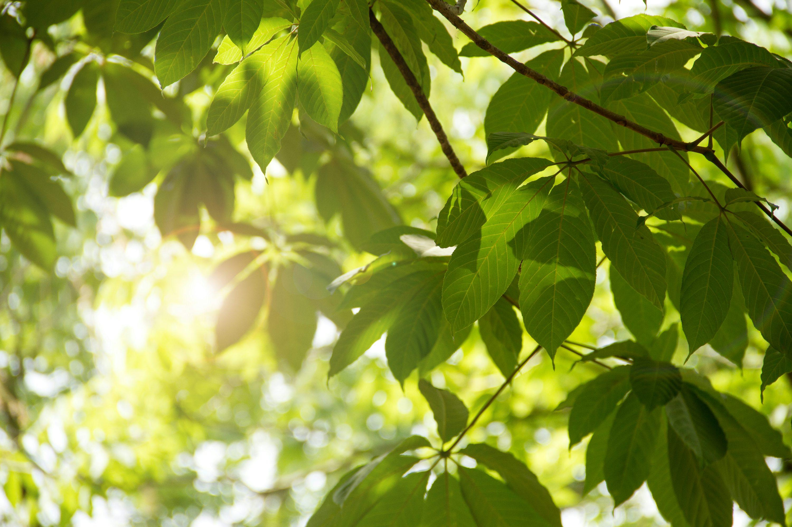
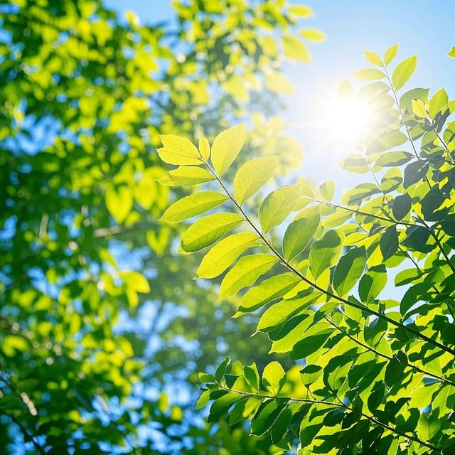
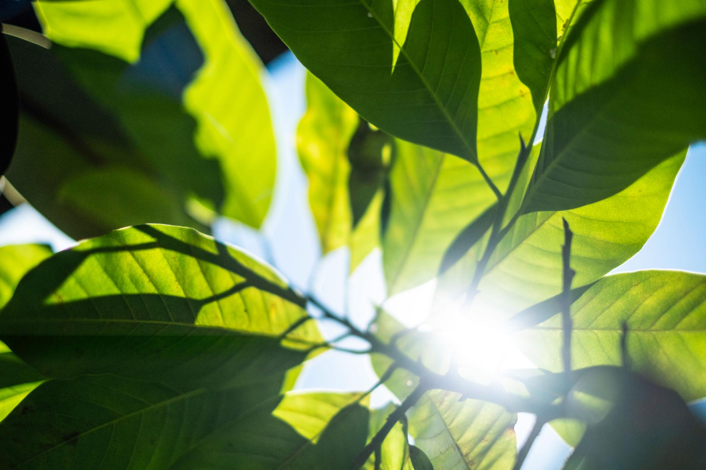
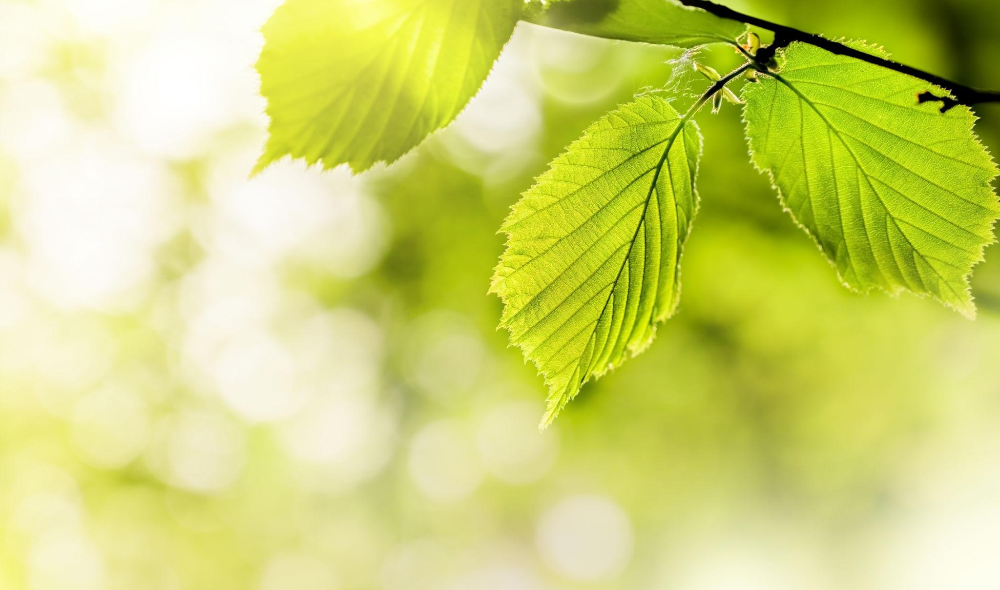
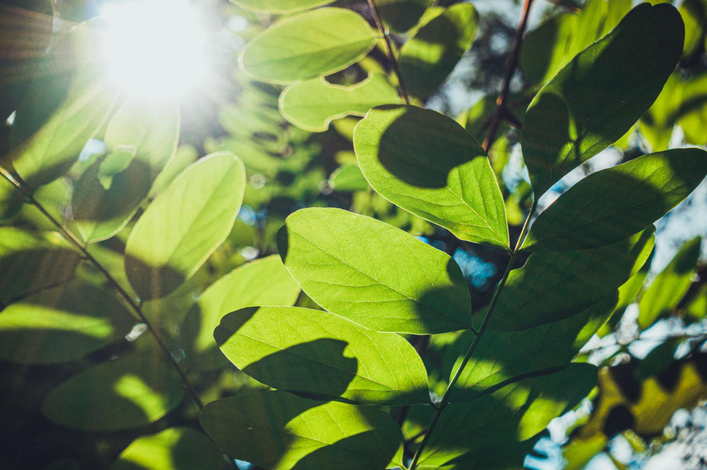
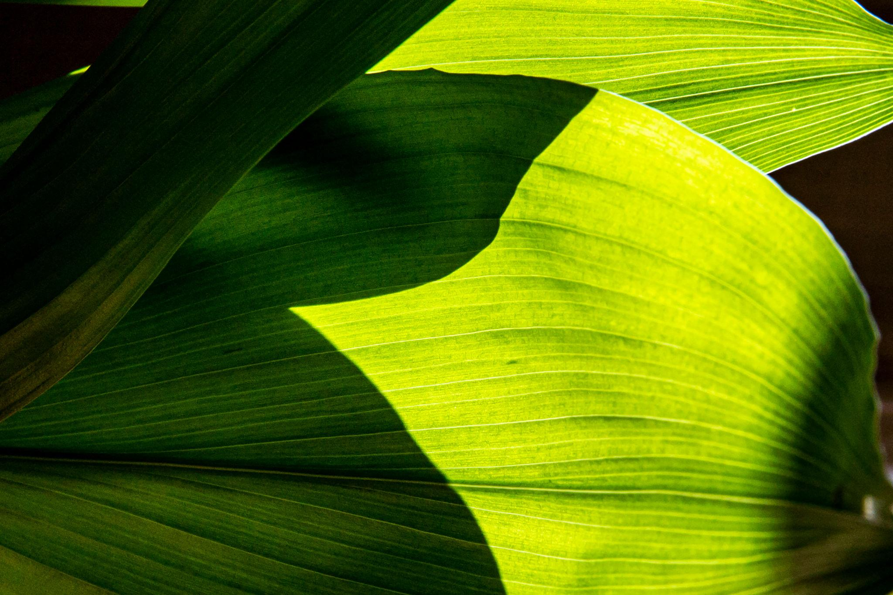

Energia para os ecossistemas
Os organismos fotossintetizantes produzem matéria orgânica que sustenta as cadeias alimentares.
Descubra como as plantas produzem seu próprio alimento e tornam possível grande parte da vida no nosso planeta.
Explorar a fotossínteseUm processo biológico que converte a energia luminosa em energia química, sustentando os ecossistemas.
A fotossíntese é o processo pelo qual plantas, algas e algumas bactérias utilizam a energia da luz para produzir compostos orgânicos. Nas plantas, esse processo ocorre principalmente nas folhas, em estruturas celulares chamadas cloroplastos.
Para realizar a fotossíntese, a planta utiliza água (H₂O) e dióxido de carbono (CO₂). Com a energia luminosa, ela produz açúcares, como a glicose, e libera oxigênio (O₂) durante a fotossíntese oxigênica.
6 CO₂ + 6 H₂O + luz C₆H₁₂O₆ + 6 O₂
Dióxido de carbono + água + energia luminosa → glicose + oxigênio.
A clorofila é um pigmento presente nos cloroplastos das células vegetais. Ela absorve principalmente luz nas regiões azul e vermelha do espectro visível. Parte da luz verde é refletida ou transmitida, o que contribui para a coloração característica das folhas.
A energia absorvida pelos pigmentos participa das reações que transformam energia luminosa em energia química utilizável pela célula.
As reações dependentes de luz ocorrem nas membranas dos tilacoides dos cloroplastos. A energia luminosa excita os pigmentos dos fotossistemas e impulsiona o transporte de elétrons.
Nesse processo, ocorre a quebra de moléculas de água, chamada fotólise da água, que fornece elétrons e prótons e libera oxigênio. Também são produzidos ATP e NADPH, moléculas que armazenam energia e poder redutor para as etapas seguintes.

A chamada fase escura corresponde, principalmente, às reações do ciclo de Calvin-Benson, que ocorrem no estroma dos cloroplastos. O nome não significa que essas reações aconteçam exclusivamente à noite: elas utilizam ATP e NADPH produzidos nas reações dependentes de luz.
Nesse ciclo, o dióxido de carbono é incorporado a moléculas orgânicas por meio da fixação do carbono. Ao final de várias etapas, são formadas moléculas que podem ser utilizadas para produzir carboidratos e outras substâncias necessárias ao crescimento vegetal.
A fotossíntese é fundamental para o funcionamento dos ecossistemas e para a manutenção da vida na Terra. Sua importância pode ser compreendida em diferentes aspectos.
Os organismos fotossintetizantes produzem matéria orgânica que sustenta as cadeias alimentares.
A fotossíntese oxigênica libera o oxigênio utilizado na respiração aeróbica.
O processo incorpora carbono do CO₂ em compostos orgânicos, participando do ciclo global do carbono.
Ao transformar energia luminosa em energia química, os organismos fotossintetizantes contribuem para a produção de alimento, para o ciclo do carbono e para a manutenção dos ecossistemas.
Observe a beleza das plantas, das folhas e da luz que alimenta esse processo essencial.



